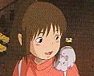
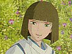
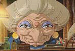
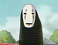
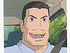
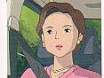

|  | A slightly willful, spoiled, ordinary 10-year-old girl. While moving to another town, she wanders into a strange town with her parents. To survive, she has to work at the bathhouse ABURAYA, which is ruled by Yu-baaba the witch. She is deprived of her name Chihiro (literally means a thousand fathoms) and is given a new name, Sen (literally means a thousand*). While working, she learns many things. |
|  | A mysterious boy who helped the frightened Chihiro when she found her parents changed into pigs. He continues to help Chihiro, but sometimes he takes a cold attitude toward her. He seems to work for Yu-baaba, under her secret orders. |
|  | The mistress of ABURAYA, the bathhouse. No one knows her age. She uses magic and rules the workers. She is strict to her workers and greedy, but she might not be such a mean person. Everything, from her clothes and decorations to the articles of her room, is gorgeous. |
|  | A mysterious man. He seems to come from yet another different world from the world of ABURAYA. He comes into ABURAYA as Chihiro invited him in. His purpose and his true identity are mysteries. |
|  | Chihiro’s father. 38-year-old. He is very optimistic and is unreasonably confident. Although Chihiro feels uneasy, he just goes into the tunnel they happened to find. He has a careless side, as he helped himself to the food in front of him. Because he ate the food intended for the gods, he was turned into a pig, as was his wife. |
|  | Chihiro’s mother. 36-year-old. She is realistic and strong. She is used to Chihiro’s temper, and she doesn’t care so much even though Chihiro has a sullen expression in the back seat of the car. She speaks her mind without hesitation to her husband, but in the end, she follows him. |